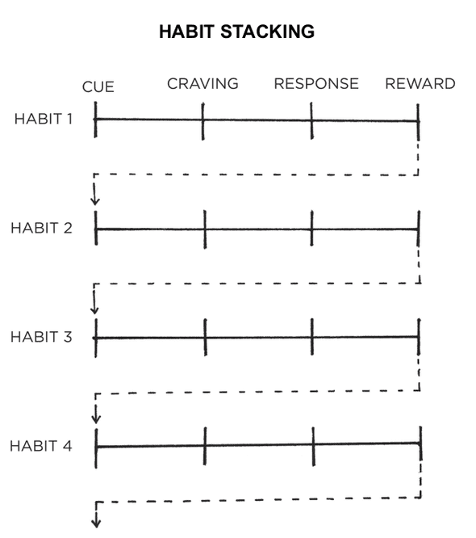

Implementaiotn intention is a plan you make beforehand baout what and wehre to act -- how you intend to implement a particular habt. The broad format is: "When situation X arises, I will perform response Y." A simple way to plan your implementaion intentions is to write the out using the template of this sentence: I will [BEHAVIOR] at [TIME] in [LOCATION
The goal of habit staking is to tie you desired behavior into something you alread do each day. You can then create larger stacks of habits by chaining small habits together.
Habit stacking increases the likelihood that you'll stick with a habit by stacking your new behavior on top of an old one. This process can be repeated to chain numerous habits together, each one acting as the cue for the next.
B = f(P,E) - People often choose products not because of what they are but because of where they are. Hawkins Stern described this as Suggestion Impulse Buying, which "is triggered when a shopper sees a product for the first time and visualizes a need for it." In order to design one's environment for success, context is the cue. A single trigger for a habit is the entire context surrounding the behavior. Making habits obvious is key.